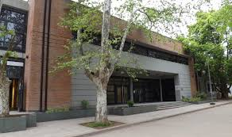

Docente
Los docentes cumplen un rol clave en la formación académica y humana de las personas. Trabajan en distintos niveles educativos y contextos.
- Educación inicial: maestros/as de jardín que trabajan con niños de 3 a 5 años.
- Educación primaria: enseñan materias básicas como lengua, matemáticas y ciencias.
- Educación secundaria: especialización por áreas como historia, biología o literatura.
- Educación especial: docencia adaptada para personas con discapacidad o necesidades específicas.
- Nivel superior: docentes universitarios o terciarios.
Para mas información existen distintas escuelas para estudiar por si te interesa
algunos ejemplos serian:
la universiad Kennedy
La universidad Kennedy Universidad Argentina John F. Kennedy es una institución de gestión privada que ofrece carreras de grado y posgrado en diversas áreas, con opciones de cursada presencial, a distancia e híbrida. Fundada en 1964, se destaca por su compromiso social y la calidad de su educación.

Para mas información podrias acceder a su pagina
la universiad de lujan
La Universidad Nacional de Luján (UNLu) ofrece una amplia variedad de carreras de grado y posgrado, agrupadas en diferentes áreas académicas. Su oferta educativa incluye licenciaturas, profesorados, tecnicaturas, maestrías y doctorados.

Para mas información podrias acceder a su pagina
Volver